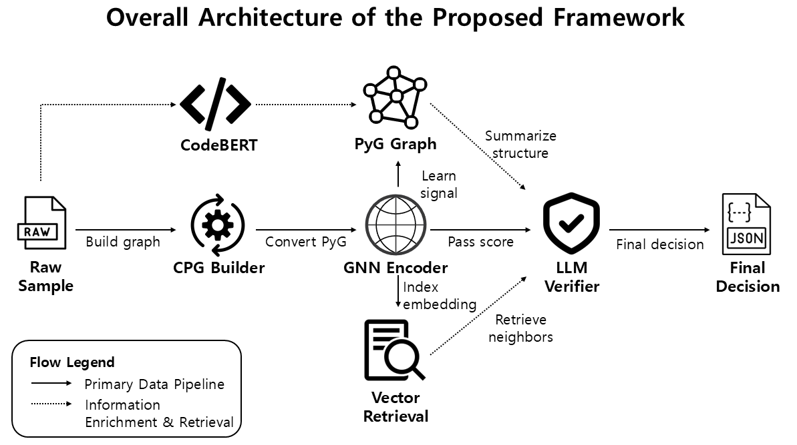

2025 학위논문 주제 발표
코드 속성 그래프를 활용한 LLM 기반 코드 취약점 탐지
LLM-Based Code Vulnerability Detection Using Code Property Graphs
Presenter
신은성
국립군산대학교 소프트웨어학과
Advisor
정현준
1
목차
I.서론
II.관련 연구
III.시스템
IV.기대효과
2
서론
연구 주제 및 문제 정의
문제 인식
- 기존 LLM 기반 탐지는 함수 또는 코드 스니펫 중심의 텍스트 입력에 의존한다.
- 취약점은 제어 흐름, 데이터 의존성, 호출 관계 같은 구조적 상호작용 속에서 드러난다.
- 구조 정보가 보존되지 않으면 판단 안정성과 해석 가능성이 함께 낮아진다.
연구 목표
- 원시 코드를 CPG로 변환해 취약 관련 상호작용을 구조적으로 유지한다.
- GNN으로 구조 임베딩과 기준 예측을 함께 학습한다.
- 검색 근거와 구조 요약을 바탕으로 LLM 검증 단계를 구성한다.
3
서론
텍스트 기반 접근의 한계
구조 정보 손실
- 입력 검증 누락, 데이터 전파, 자원 해제 순서는 토큰 나열만으로 드러나기 어렵다.
- 긴 문맥을 단순히 추가하면 비관련 정보가 함께 증가할 수 있다.
- 어떤 경로가 취약 조건을 형성했는지 일관되게 설명하기 어렵다.
실제 적용 한계
- 탐지 결과는 패치 적용 여부와 후속 분석 우선순위 결정으로 이어진다.
- 구조적 근거가 없는 결과는 분석자가 신뢰하기 어렵다.
- 높은 예측 성능과 함께 근거의 일관성과 설명력이 요구된다.
4
관련 연구
관련 연구 동향
그래프 기반 취약점 탐지
- CPG는 구문 구조, 제어 흐름, 프로그램 의존성을 통합해 표현한다.
- 그래프 기반 연구는 관계 기반 취약 패턴 학습에 강점을 보였다.
- API 의미와 코드 의도를 해석하는 데에는 한계가 남아 있다.
코드 언어모델과 결합 연구
- CodeBERT, GraphCodeBERT, UniXcoder 등은 코드 의미 해석 범위를 확장했다.
- 함수 단위 텍스트 입력만으로는 구조적 단서 반영이 제한적이다.
- 최근 연구는 그래프 요약, 검색 근거, 맥락 기반 reasoning 결합으로 발전하고 있다.
5
시스템
제안 방법 개요
핵심 원리
- CPG가 코드의 구조적 상호작용을 중간 표현으로 보존한다.
- GNN이 구조 임베딩 z와 기준 예측 p를 함께 생성한다.
- LLM은 독립적인 1차 탐지기보다 구조 신호 기반 verifier로 사용된다.
설계 의도
- 구조 기반 판별과 의미 기반 해석을 하나의 흐름으로 연결한다.
- 유사 사례 검색을 통해 비교 가능한 근거를 함께 제시한다.
- 그래프 표현, 검색기, 검증 모델을 단계별로 교체·확장할 수 있다.
6
시스템
전체 아키텍처
모듈 구성
- 데이터 정제 모듈이 원시 코드와 메타데이터의 무결성을 점검한다.
- CPG 생성 및 그래프 변환 모듈이 샘플을 구조 표현으로 변환한다.
- GNN 학습 모듈이 구조 임베딩과 기준 예측을 함께 생성한다.
- 임베딩·검색 모듈과 LLM 검증 모듈이 최종 판단을 구성한다.

핵심 연결
- 구조 임베딩은 분류와 검색의 공통 표현으로 사용된다.
- 검색된 이웃 샘플은 현재 샘플의 비교 근거로 활용된다.
- LLM은 그래프 요약과 검색 근거를 함께 검토해 최종 판단을 검증한다.
7
시스템
처리 흐름
학습 단계
- 원시 코드와 메타데이터를 점검하고 중복, 라벨 이상치, 분할 누수를 정리한다.
- 각 샘플의 CPG를 구성하고 graph-learning representation으로 변환한다.
- GNN 학습으로 구조 임베딩 z와 예측 점수 p를 얻고 학습 임베딩을 인덱싱한다.
추론 단계
- 테스트 샘플마다 top-k structural neighbors를 검색한다.
- CPG summary와 retrieved evidence로 verifier context를 구성한다.
- LLM verification으로 최종 prediction과 supporting evidence를 생성한다.
8
기대효과
기대효과
기대 효과
- 텍스트 기반 탐지가 놓치기 쉬운 구조적 단서를 판단 과정에 반영할 수 있다.
- CPG와 GNN을 통해 취약점 관련 상호작용을 구조적으로 보존할 수 있다.
- 검색 근거와 LLM 검증을 결합해 최종 판단의 신뢰성과 해석 가능성을 높일 수 있다.
활용 기대
- 구조 기반 판별과 의미 기반 해석을 하나의 흐름으로 연결하는 탐지 프레임워크로 활용할 수 있다.
- 그래프 표현, 검색기, 검증 모델을 단계별로 교체·확장할 수 있는 기반이 된다.
- 실제 코드 보안 분석 환경에서 후속 검토와 우선순위 판단을 지원하는 방향으로 확장할 수 있다.
9
기대효과
CPG 기반 구조 표현과 근거 검색을 결합한 LLM 검증형 취약점 탐지 프레임워크
코드 속성 그래프를 활용한 LLM 기반 코드 취약점 탐지
Q&A
신은성 · 국립군산대학교 소프트웨어학과
10